Chess Knight
Using Fusion 360, I designed and 3D Printed a chess knight.
Here is the design in Fusion 360.
Design Steps:
Create a column.
To start off, I drew a circle and extruded it to the height of the chess piece.
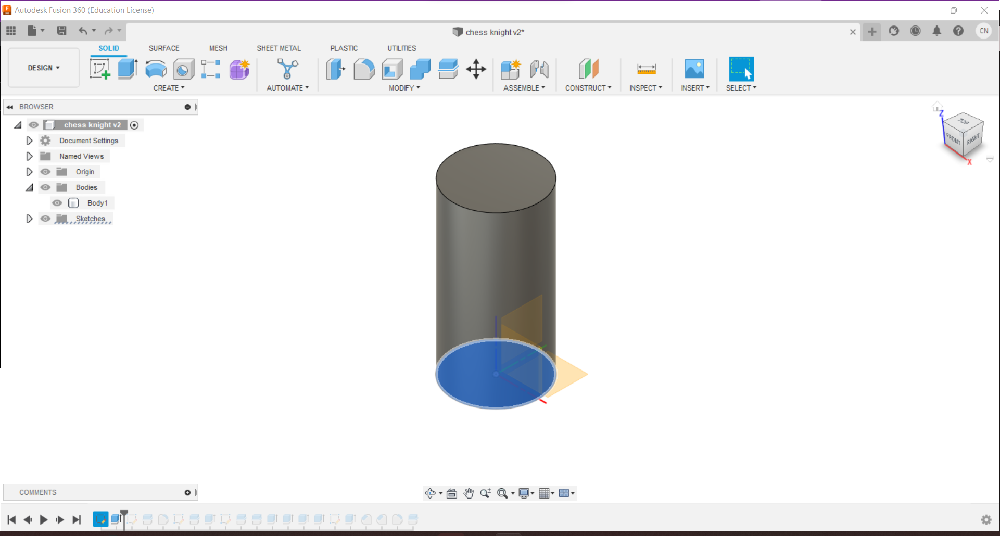Split the head, body and base.
To split the column into 3, I drew 2 rectangles and used a side of the rectangles as a means to split the boy into 3.
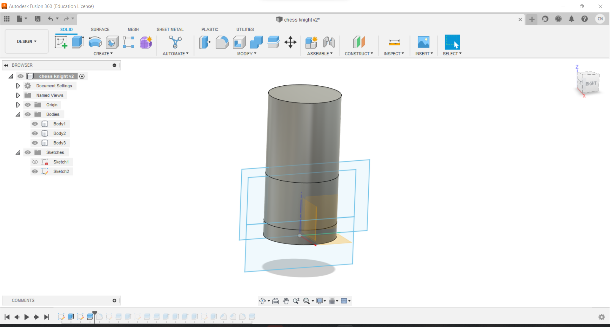Define the base
I used the fillet function to define the base and seperate it from the body.
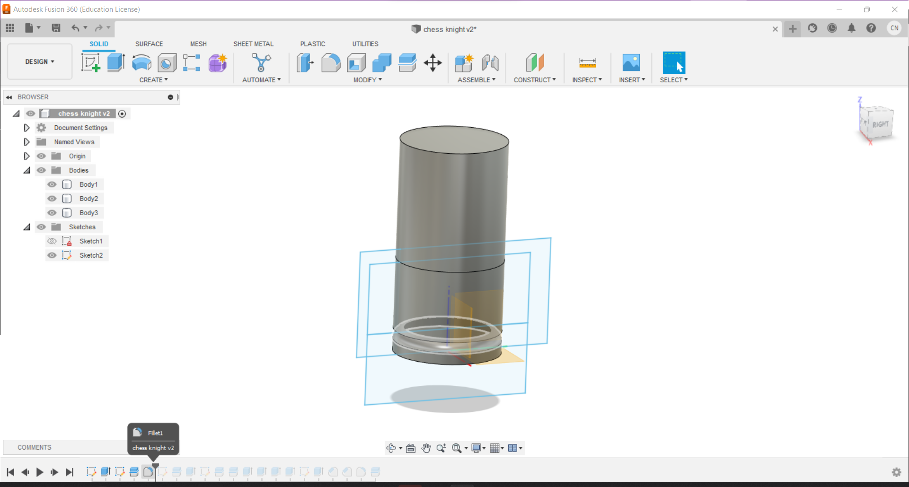Draw a rough sketch
Select the vertical plane and draw a rough sketch of the knight. This will be used as a guide.
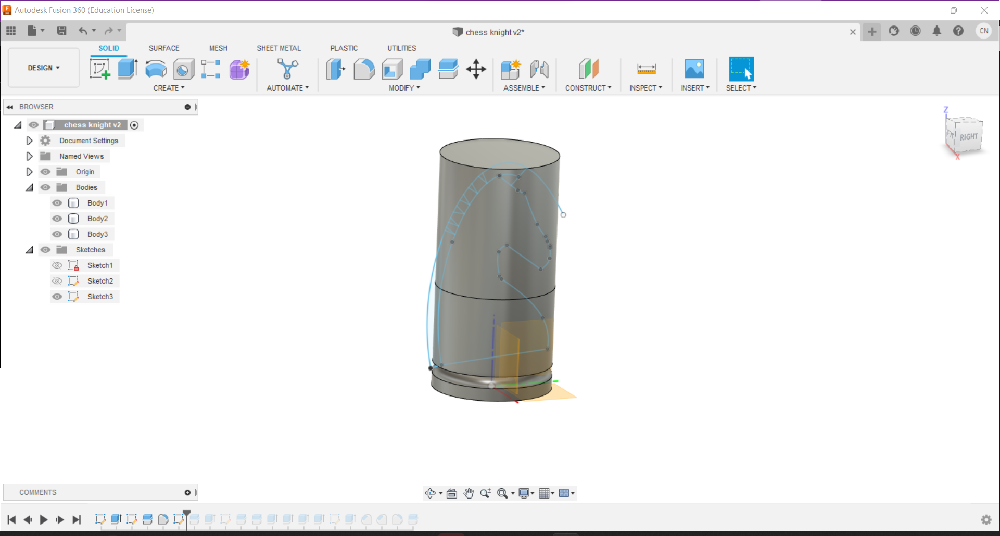Shape the column
Use the sketch to split the top of the column to draw the shape of the mane and extrude the sections outside of the column.
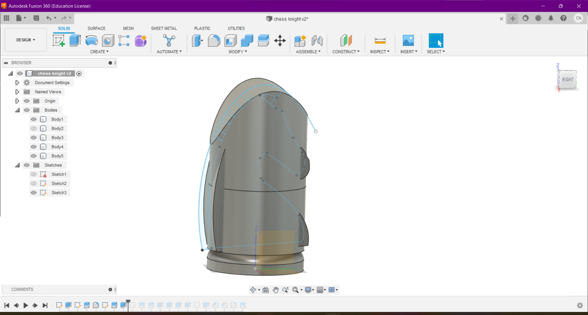Head and neck
I wanted the neck and the head to have varying thickness so I split them and extruded (using the cut function) them give them shape.
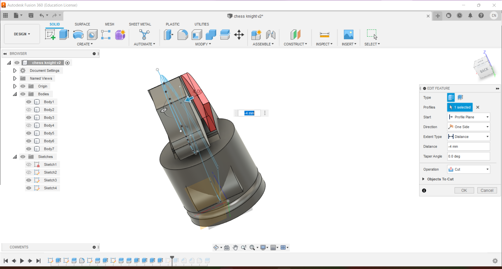Mane
Extrude the mane using the settings bellow:
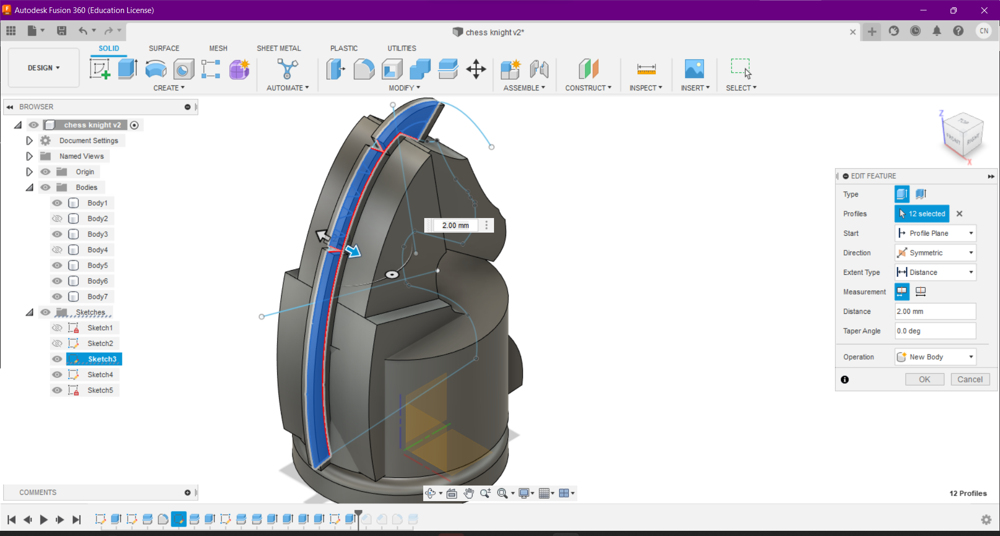Finally fillet
I used the fillet function to shape the:
- Head 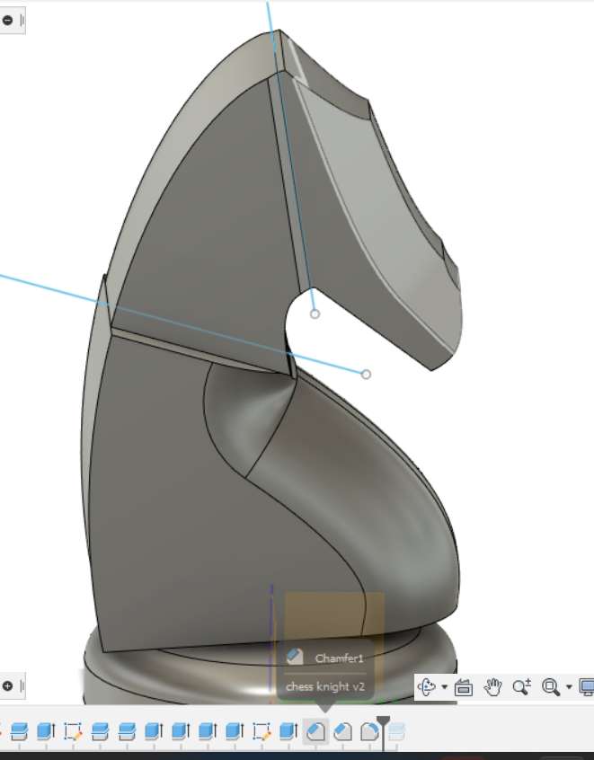
- Head and neck connection 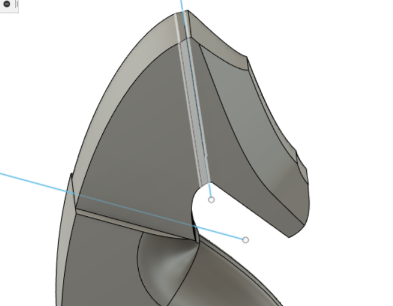
- and Body 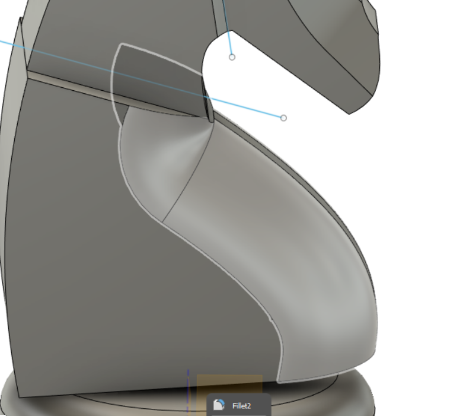
Mane indents
Most chess knights have a shape in their mane so I extruded (cut) that section as the final step of the design process.
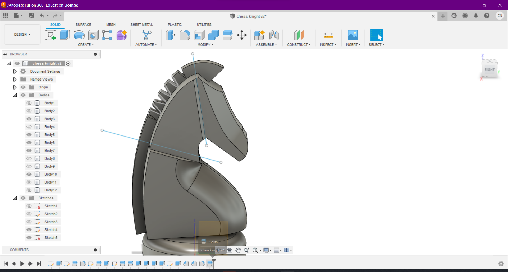Printing Steps:
Download the design
The design has to be downloaded as an stl file.
To do this right click the Document settings and click "save as mesh". Make sure that the file type is stl and only the bodies you do not want to print are hidden.
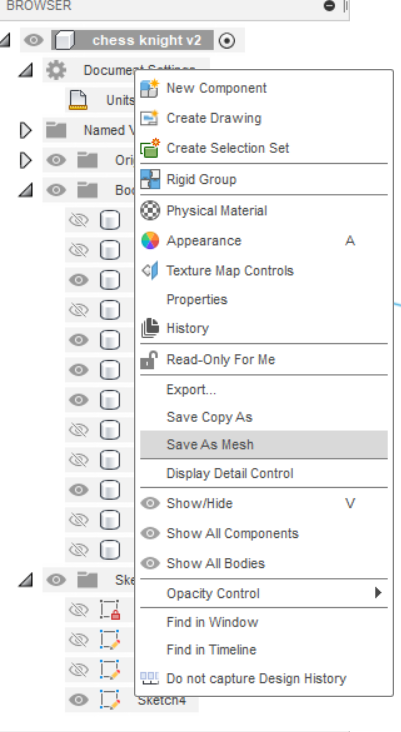It should look something like this:
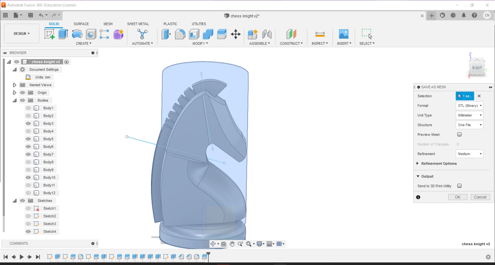Set up Cura
This depends on the 3D Printer that you are using. The 3D printer I used was 3DP-Prusa-MS.
This design has overhangs and so require supports. Here are the settings I used:
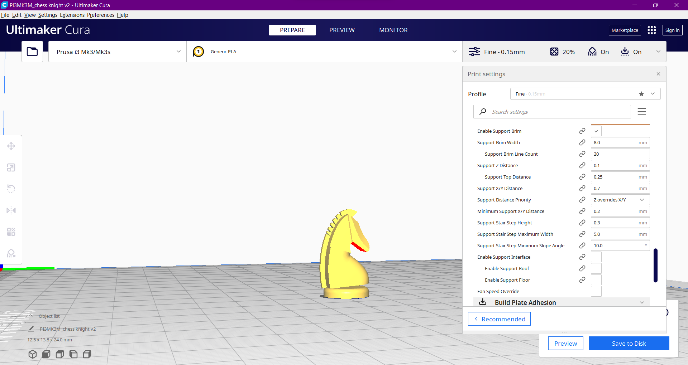Print!
After printing, the chess piece will have supports.
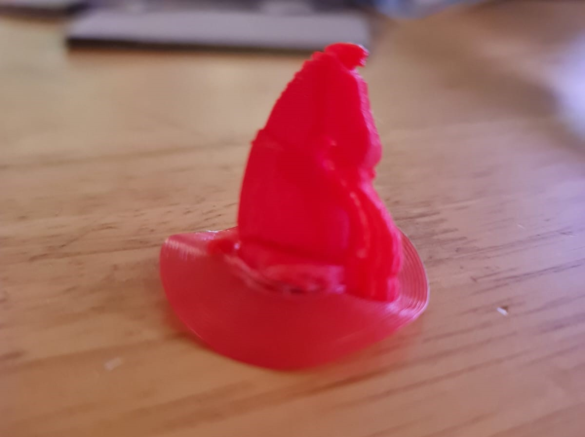Cut out the supports. I found a screwdriver with a very small size was very useful. Here is the final product:
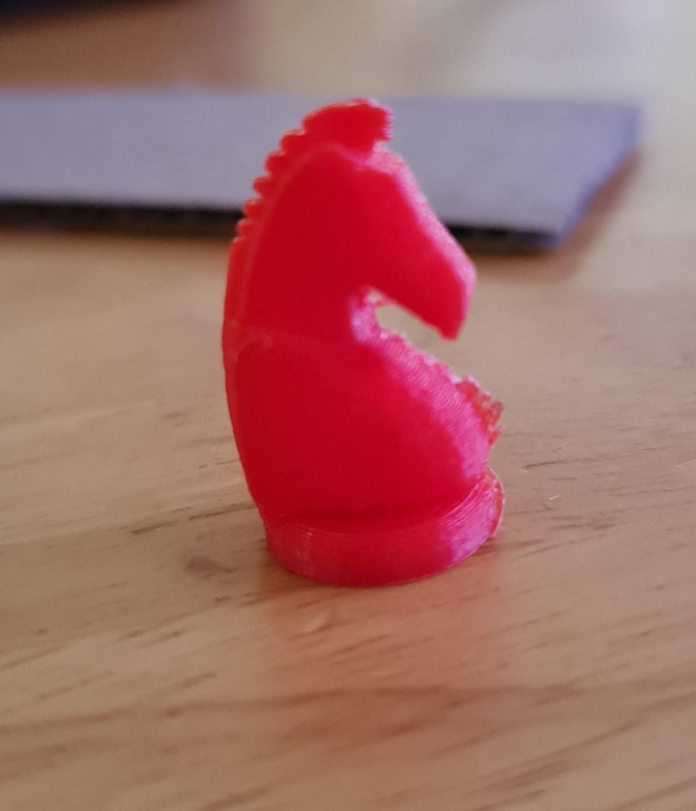Tip
Use a reference and do not be afraid to back track in case you use the "fillet" function too many times. The bottom row of the fusion 360 is very useful to make sure you are on the right track.